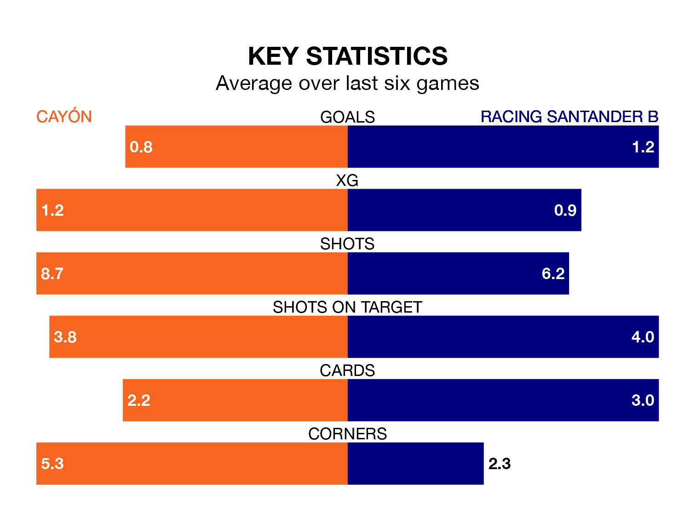

Struggling Cayón face Racing Santander B on Sunday looking to build on a win in their last league outing.
After securing all three points with a 1-1 victory over Real Avilés on February 18, Cayón sit 16th in the Segunda División RFEF Group 1.
They travel to play a Racing Santander B side fourth in the standings, who lost in their last match, 3-2 against Langreo.
With 34 goals in 23 games so far this season, Racing Santander B are the league's second-highest scorers with 1.5 goals per game. And they are conceding at an average rate, letting in 26 goals at a rate of 1.1 per game.
Cayón, meanwhile, are below average scorers, with 1.0 goal per game, compared to a league average of 1.1. They have conceded 1.3 goals per game.
In the last 10 years, Cayón and Racing Santander B have played each other on eight occasions. Cayón won one of them, Racing Santander B two, and they drew five times.
On average, Cayón scored 0.8 goals and Racing Santander B 1.0 in those matches.
Their last meeting was on October 15, when they played out a 1-1 draw.
The home side are in bad form in the Segunda División RFEF Group 1, with one win and a draw from their last six games.
With two wins and two draws over that period, the visitors' form is better – they have taken eight points from 18, compared to Cayón's four.
Updated: 10:08 (UTC), 23/02/24